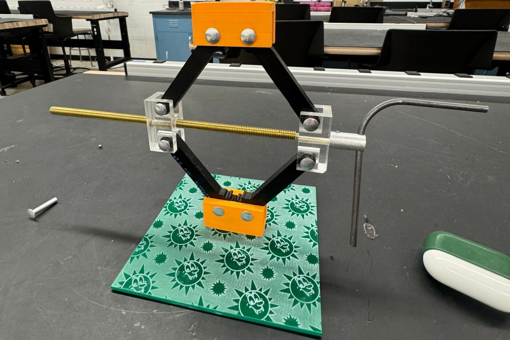

Mechanical Car Jack

A working car jack built with almost every shop process I've learned: CNC-machined parts, threads cut on a lathe, and 3D-printed and laser-cut components, all of which had to fit and carry load together.

A working car jack built with almost every shop process I've learned: CNC-machined parts, threads cut on a lathe, and 3D-printed and laser-cut components, all of which had to fit and carry load together.